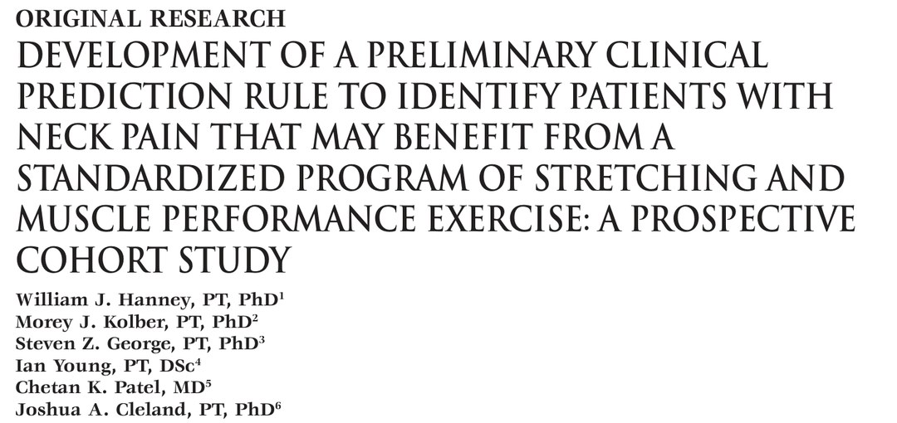
🔖原文首页（IJSPT 2013 年第 8 卷第 6 期）
📚 文献卡片
▪ 英文原题：Development of a Preliminary Clinical Prediction Rule to Identify Patients with Neck Pain That May Benefit from a Standardized Program of Stretching and Muscle Performance Exercise: A Prospective Cohort Study（初步建立临床预测规则：识别可能从标准化拉伸和肌肉功能训练中获益的颈痛患者——前瞻性队列研究）
▪ 作者：William J. Hanney, Morey J. Kolber, Steven Z. George, Ian Young, Chetan K. Patel, Joshua A. Cleland
▪ 机构：中佛罗里达大学 · 诺瓦东南大学 · 佛罗里达大学 · Spine and Sport · 脊柱健康研究所 · 富兰克林皮尔斯大学
▪ 期刊：International Journal of Sports Physical Therapy（IJSPT）
▪ 年卷期：2013;8(6):756-776
▪ PMCID：PMC3867069
▪ 文章类型：原创研究（前瞻性队列研究）
▪ 证据级别：2b
▪ 关键词：Clinical prediction rule · exercise · neck pain
颈痛终生发生率 22%～70%，年患病率 12.1%～71.5%。运动是最常用的治疗之一，通常包括拉伸和肌肉功能训练（力量、耐力、运动控制）。
• Sarig-Bahat 系统综述：有强证据支持力量训练治疗机械性颈痛
• Childs 分类：把颈痛分为活动度、向心化、体能与运动、疼痛控制、减轻头痛五类，治疗与分类匹配效果更好
• Fritz & Brennan：约 33% 的患者属于“运动与体能”类（疼痛 <7/10、无神经根受压或头痛、病程 >30 天）
问题是：哪些颈痛患者更可能从运动中获益？临床上缺少决策工具。临床预测规则（CPR）就是用初诊时的几项指标，预测患者对某种治疗反应好的概率。此前还没有针对颈痛运动治疗的 CPR，这项研究就是要初步建立一个。
| 序号 | 预测指标 |
|---|---|
| ① | 颈部功能障碍指数（NDI）< 18/50 |
| ② | 静态姿势评估存在肩前伸（圆肩） |
| ③ | 平时不以骑自行车作为运动 |
| ④ | 颈椎侧屈（任一侧）< 32° |
| ⑤ | 恐惧回避信念问卷-体力活动分量表（FABQ-PA）< 15 |
| 满足项数 | 成功概率 | 阳性似然比（+LR） |
|---|---|---|
| 基线（不用规则） | 约 55% | — |
| ≥ 4 项 | 78% | 2.97 |
| 5 项全满足 | 95% | 14.94（置信区间极宽） |
但是：6 个月时，规则阳性和阴性患者的疼痛、功能、整体改善都没有差异。所以这个规则最多只能预测短期疗效。
| 项目 | 内容 |
|---|---|
| 设计 | 前瞻性单臂队列：所有人接受同一套运动方案 |
| 纳入 | 18 岁以上，主诉颈痛，NDI ≥ 10/50 |
| 排除 | 肿瘤、近期骨折、感染、中枢神经受累、痉挛性斜颈、确诊偏头痛或纤维肌痛、颈/胸椎手术史、英语不足以完成问卷 |
| 评估时间 | 初诊及第 2、4、6 周；6 个月邮寄随访 |
| 自评量表 | 数字疼痛评分（NPRS）、颈部功能障碍指数（NDI）、改良恐惧回避信念问卷（FABQ）、整体改善评分（GROC） |
| 成功标准 | 6 周时 GROC ≥ +4（“中等程度改善”及以上） |
| 统计 | 单因素 p < 0.10 的变量保留 → ROC 曲线定界值 → 后退法逻辑回归 → 组合成 CPR |
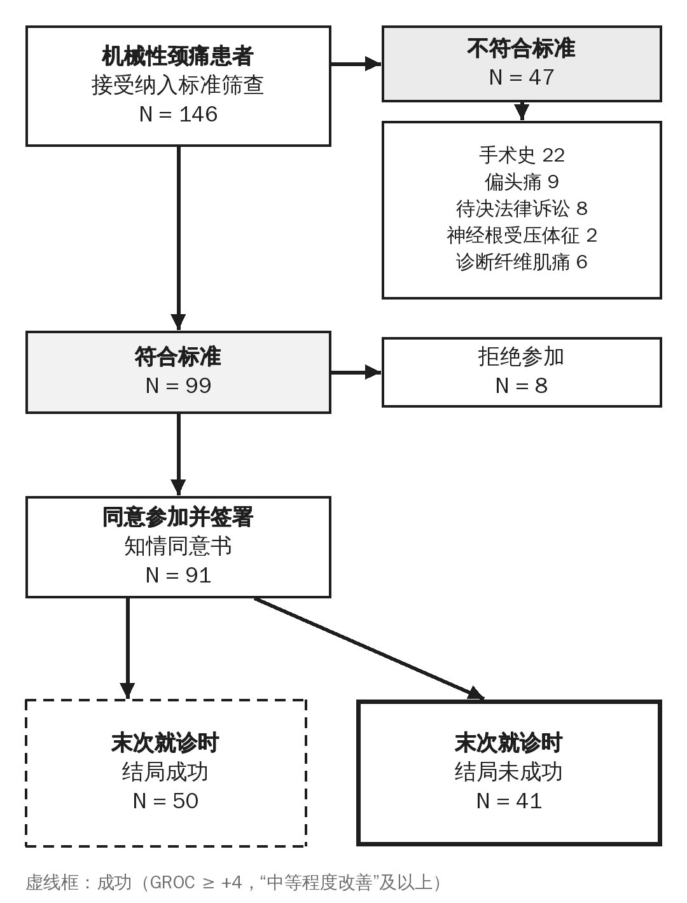
🔖图1：受试者招募与随访流程（已译为中文重绘）
无论检查结果如何，所有人都做同一套方案：每周 2 次门诊，共 6 周。门诊日在治疗师监督下完成全部练习；非门诊日只在家做拉伸，以提高依从性。
| 类别 | 动作 | 参数 |
|---|---|---|
| 拉伸 | 上斜方肌、前/中斜角肌、枕下肌、胸大肌 | 每个 30 秒 × 2 次，双侧 |
| 肌肉功能 | 颈椎伸展等长、肩胛前伸、颅颈屈曲、坐姿划船、水平外展加外旋、肩胛平面上举 | 缓慢全范围，末端保持 3 秒，每个 30 次 |
| 进阶 | 能连续无休息完成 30 次（末端保持 3 秒）就升级弹力带 | 黄（细）→ 红（中）→ 绿（重）→ 蓝（特重） |
2009 年 12 月至 2011 年 6 月共纳入 91 人，平均参加 7.3 次训练。50 人（约 55%）6 周时达到成功标准。NPRS 从 4.73 降到 3.14，NDI 从 17.68 降到 11.06，有统计学意义，但均未达到最小临床重要差异。
只有 35.2%（32/91）完成了至少 11 次治疗；但完成与未完成者的 NDI、NPRS、GROC 没有差异。
表 1 基线人口学与结局变量
| 变量 | 全部（N=91） | 成功（N=50） | 未成功（N=41） | P 值 |
|---|---|---|---|---|
| 年龄（岁） | 45.6（13.3） | 46.9（14.3） | 43.9（11.8） | 0.27 |
| 身高（cm） | 165.7（9.2） | 166.4（9.4） | 164.8（8.9） | 0.33 |
| 体重（kg） | 74.0（20.5） | 76.2（19.5） | 72.9（21.7） | 0.32 |
| BMI | 27.1（6.9） | 27.5（6.7） | 26.6（7.3） | 0.54 |
| 女性 n（%） | 69（75.8%） | 39（78%） | 30（73.2%） | 0.59 |
| 病程（天） | 286.6（678.5） | 209.4（571.0） | 383.1（789.6） | 0.23 |
| NPRS | 4.7（1.9） | 4.6（2.0） | 4.9（1.9） | 0.35 |
| FABQ-PA | 13.6（6.9） | 12.1（7.1） | 15.5（6.3） | 0.02* |
| FABQ-W（工作） | 13.8（11.6） | 12.0（10.6） | 15.9（12.5） | 0.11 |
| NDI | 17.7（7.9） | 16.1（6.9） | 19.7（8.8） | 0.03* |
| 起病：渐进 | 51（56.0%） | 26（52.0%） | 25（61.0%） | 0.69 |
| 起病：突发非外伤 | 21（24.2%） | 13（26.0%） | 8（19.5%） | |
| 起病：外伤 | 18（19.8%） | 11（22.0%） | 7（17.1%） | |
| 既往颈痛史 | 44（48.4%） | 21（42.0%） | 23（56.1%） | 0.18 |
表 2 单因素分析有意义变量的敏感度、特异度和似然比
| 变量 | 敏感度 | 特异度 | +LR | −LR |
|---|---|---|---|---|
| FABQ-PA < 15 | 0.60（0.46～0.72） | 0.58（0.42～0.72） | 1.41（0.92～2.16） | 0.69（0.45～1.07） |
| NDI < 18/50 | 0.66（0.52～0.78） | 0.58（0.42～0.72） | 1.55（1.03～2.34） | 0.59（0.37～0.95） |
| 不骑自行车 + | 0.96（0.87～0.99） | 0.19（0.10～0.34） | 1.19（1.02～1.40） | 0.21（0.05～0.91） |
| 肩前伸 * | 0.78（0.65～0.87） | 0.40（0.26～0.55） | 1.30（0.97～1.74） | 0.55（0.29～1.05） |
| 颈伸展 < 44° | 0.66（0.52～0.78） | 0.60（0.45～0.74） | 1.65（1.08～2.55） | 0.57（0.36～0.89） |
| 单侧侧屈 < 32° | 0.66（0.52～0.78） | 0.53（0.38～0.67） | 1.39（0.95～2.04） | 0.65（0.39～1.05） |
| 至少一侧胸大肌紧张 | 0.58（0.44～0.71） | 0.60（0.45～0.74） | 1.45（0.93～2.27） | 0.70（0.46～1.06） |
后退法逻辑回归保留 5 个变量（Nagelkerke R² = 0.33，Hosmer-Lemeshow 拟合良好 P = 0.58）。
表 3 回归保留变量组合后的预测效能
| 满足项数 | 敏感度 | 特异度 | +LR | −LR | 成功概率 | 阳性人数 |
|---|---|---|---|---|---|---|
| ≥ 1 项 | 0.99 | 0.01 | 1.00 | 0.82 | 55% | 91/91 |
| ≥ 2 项 | 0.99 | 0.05 | 1.04 | 0.20 | 56% | 89/91 |
| ≥ 3 项 | 0.90 | 0.39 | 1.48 | 0.26 | 64% | 70/91 |
| ≥ 4 项 | 0.58 | 0.81 | 2.97（1.52～5.70） | 0.52 | 78% | 37/91 |
| 5 项 | 0.18 | 0.99 | 14.94（0.89～250.11） | 0.83 | 95% | 9/91 |
作者认为 ≥4 项的置信区间相对较窄，最适合临床使用；5 项全满足的 +LR 虽高，但区间从 0.89 到 250，几乎没有精确性。
| 指标（6 个月） | 规则阳性（29/37 回复） | 规则阴性（38/54 回复） | P 值 |
|---|---|---|---|
| NDI | 9.5 ± 9.7 | 10.53 ± 10.36 | 0.70 |
| NPRS | 2.52 ± 2.72 | 2.6 ± 2.43 | 0.90 |
| GROC | 4.48 ± 2.79 | 3.84 ± 3.15 | 0.39 |
• NDI 较低：功能障碍轻的人更容易从多模式运动中获益；Fritz 研究中“运动与体能”组的 NDI 平均也只有 14.9/50
• FABQ-PA 较低：对运动的恐惧少，更愿意积极参与运动治疗
• 不骑自行车：Hill 等发现规律骑车与颈痛预后差相关（OR = 2.4），可能与骑行姿势、震动、颈部旋转和伸肌持续工作有关
• 肩前伸：+LR 只有 1.3，单独看并不是独立的预后指标；运动能否改变姿势也不明确
• 侧屈 < 32°：方案中的拉伸可能改善了活动度，因此活动度受限者更易改善
• 头前伸：外耳道位于腰椎前方
• 肩前伸：肩峰位于腰椎前方
• 胸椎曲度分三段（C7～T2、T3～T5、T6～T10）记录：正常 / 后凸过大 / 后凸减少
• 颈屈伸（图 1、2）：坐位，倾角仪置于头顶矢状面、对准外耳道，归零后尽量前屈 / 后伸
• 颈侧屈（图 3、4）：倾角仪置于头顶冠状面，分别向两侧侧屈
• 颈旋转（图 5、6）：长臂量角器轴心在头顶，固定臂对准肩峰，移动臂平分鼻梁
• 胸椎旋转（图 7）：定性评估；双臂交叉向一侧旋转，治疗师一手监测胸腰交界，末端加压，记录症状变化
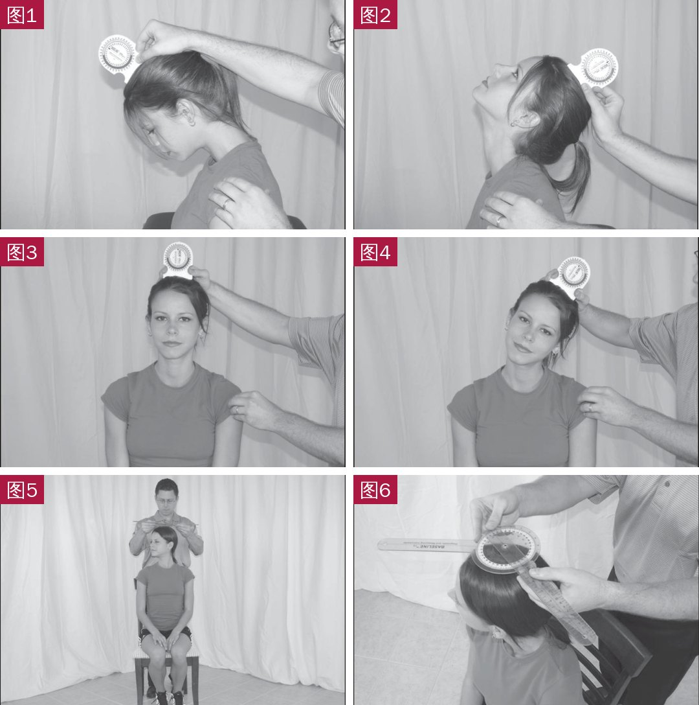
🔖附录图 1～6：颈椎屈、伸、左右侧屈、左右旋转的测量
• Spurling 试验（图 8）：坐位侧屈，治疗师从头顶施加约 7 kg 压力，先健侧后患侧；复现症状为阳性
• 牵引试验（图 9）：仰卧，一手托枕骨、一手托下颌，轻度屈颈后逐渐施加约 14 kg 牵引；症状减轻或消失为阳性
• 上肢张力试验（图 10）：仰卧，依次肩胛下压 → 肩外展约 90°（屈肘）→ 前臂旋后、伸腕伸指 → 肩外旋 → 伸肘 → 颈椎向对侧再向同侧侧屈。阳性：复现症状；两侧伸肘或伸腕差 >10°；对侧侧屈加重或同侧侧屈减轻症状
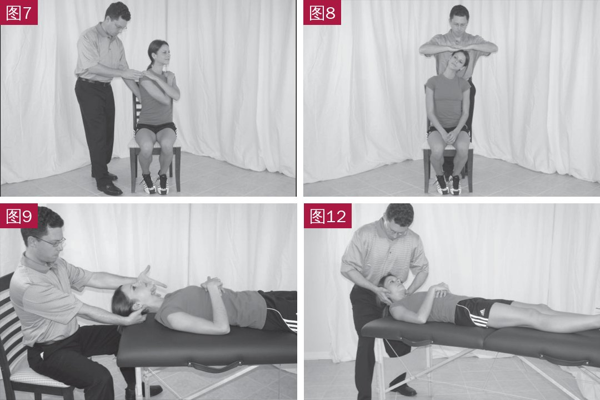
🔖附录图 7：胸椎旋转；图 8：Spurling 试验；图 9：牵引试验；图 12：C0-1 关节活动度
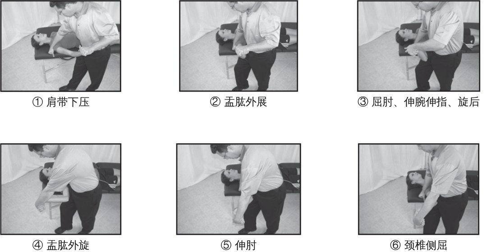
🔖附录图 10：上肢张力试验的 6 个步骤（英文标签已译为中文）
• 第一肋 CRLF 试验（图 11）：坐位，颈椎被动完全转向对侧，再屈颈（耳朝胸骨）；一侧受限提示第一肋活动不足
• C0-1（图 12）：仰卧，头伸出床外由治疗师托住，向测试方向旋转约 30° 后做前后向滑动，与对侧比较
• C1-2（图 13）：颈椎完全屈曲下左右旋转，正常约 40°～45°
• 节段被动活动（图 14）：用第二掌指关节下外侧经关节柱施加侧向滑动，从 C2 到 C7 逐节评估，判定活动不足 / 正常 / 过度及是否疼痛
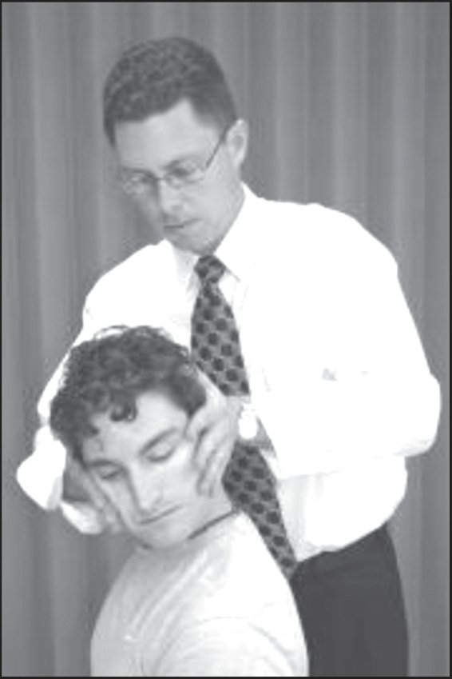
🔖附录图 11：第一肋颈椎旋转侧屈（CRLF）试验
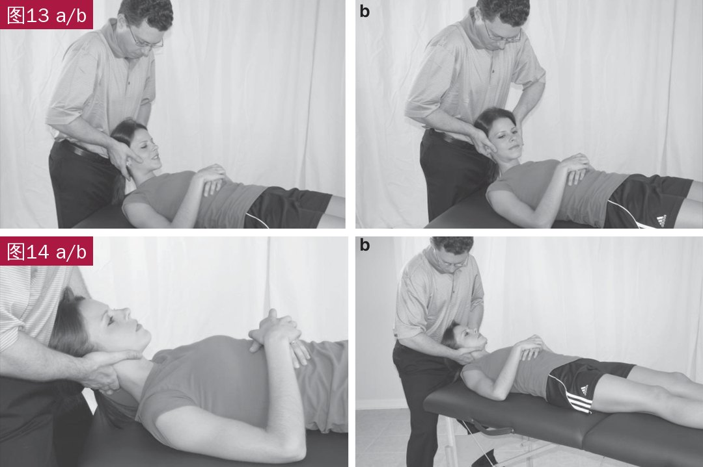
🔖附录图 13 a/b：C1-2 关节活动度；图 14 a/b：颈椎节段被动活动测试
| 肌肉 | 方法 | 紧张的判定 |
|---|---|---|
| 背阔肌（图 15） | 仰卧伸腿，双肩尽量前屈过头 | 手臂不能平放于床面，或出现腰椎前凸代偿、偏离矢状面 |
| 胸小肌（图 16） | 仰卧，从床头观察肩峰前缘 | 一侧肩峰前缘抬高 |
| 胸大肌（图 17） | 一手固定胸大肌内侧，另一手将上肢屈曲并水平外展到软组织阻力 | 一侧活动度减小；正常时上臂可与冠状面平齐 |
| 上斜方肌（图 18） | 患者抓床沿，固定肩胛上缘，头部屈曲、向对侧侧屈、向同侧旋转 | 比对侧更早遇到阻力 |
| 前/中斜角肌（图 19） | 头伸出床外，固定锁骨内上缘，保持枕下屈曲，前后平移、对侧侧屈、同侧旋转 | 比对侧更早遇到阻力 |
| 枕下肌（图 20） | 用示指近节固定 C2 后方，头向一侧转 20°～30° 后做上颈椎屈曲 | 比对侧更早遇到阻力 |
| 肩胛提肌（图 21） | 侧卧，颈屈曲、对侧侧屈和旋转；固定 C1～C4 外侧，将肩胛下压、上回旋、后倾 | 比对侧更早遇到阻力 |
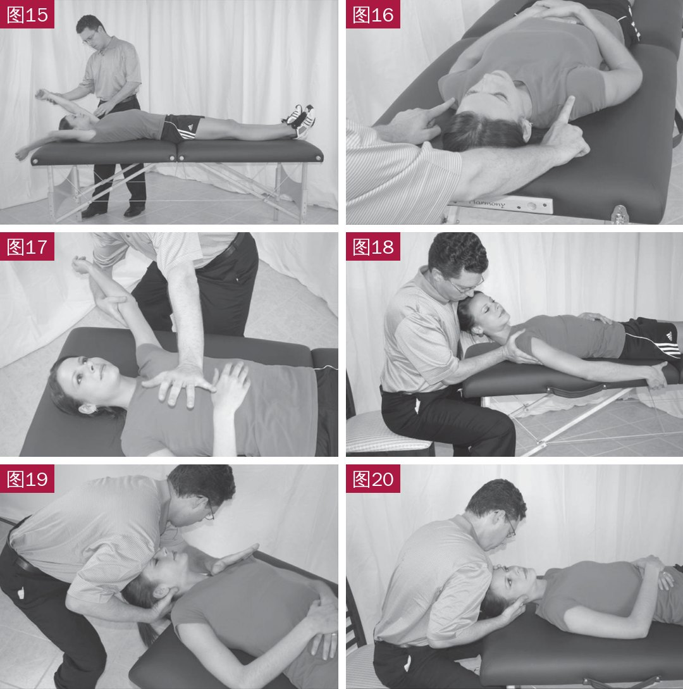
🔖附录图 15：背阔肌；16：胸小肌；17：胸大肌；18：上斜方肌；19：前/中斜角肌；20：枕下肌
| 测试 | 体位与方法 | 判定 |
|---|---|---|
| 颈屈肌耐力（图 22） | 仰卧收下颌、抬头 1～2 英寸至下颌下出现皮褶，画线标记后尽量保持 | 记录时间；症状复现、头触及治疗师的手或皮褶标记断开即停止 |
| 下斜方肌（图 23） | 俯卧，肩外展 120°～130°、外旋 90°，在前臂桡侧向下施压 | 不能保持 5 秒为弱 |
| 菱形肌（图 24） | 俯卧，肩外展 90°、内旋 90°，向下施压 | 不能保持 5 秒为弱 |
| 中斜方肌（图 25） | 俯卧，肩外展 90°、外旋，向下施压 | 不能保持 5 秒为弱 |
| 前锯肌（图 26） | 坐位，肩前屈约 120°、伸肘，向下施压同时观察肩胛下角 | 下角离开胸廓为弱 |
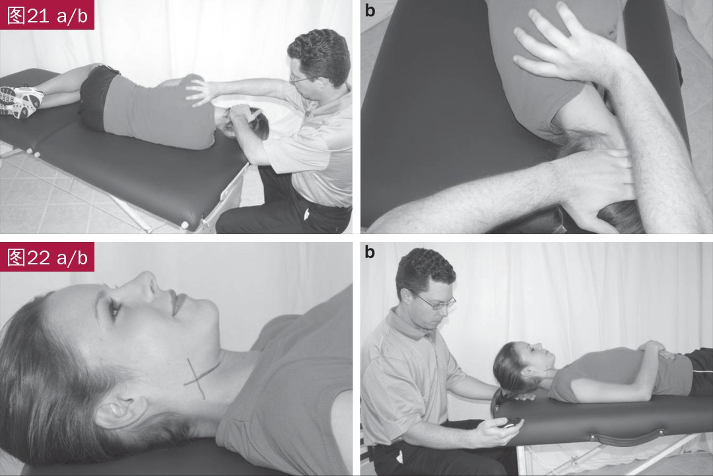
🔖附录图 21 a/b：肩胛提肌长度；图 22 a/b：颈屈肌耐力测试
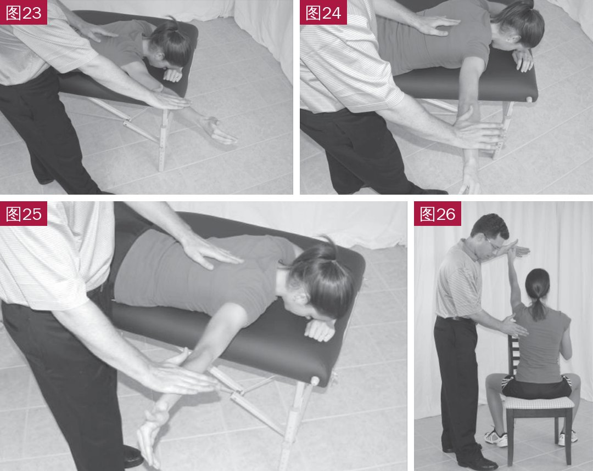
🔖附录图 23：下斜方肌；24：菱形肌；25：中斜方肌；26：前锯肌
| 动作 | 方法 |
|---|---|
| 上斜方肌（图 27） | 一手抓住椅座，另一手放在头后，慢慢把头拉向前方和对侧，同时稍向同侧旋转，直到颈部有轻微牵拉感 |
| 前/中斜角肌（图 28） | 一手按住对侧锁骨，头慢慢向侧方并稍向后倒，直到颈前有牵拉感 |
| 枕下肌（图 29） | 双手放在颈后固定，慢慢收下颌低头，直到颅底有牵拉感 |
| 胸大肌（图 30） | 站在门口，双手扶门框约与头同高，前后脚站立，慢慢前倾，直到胸前有牵拉感 |
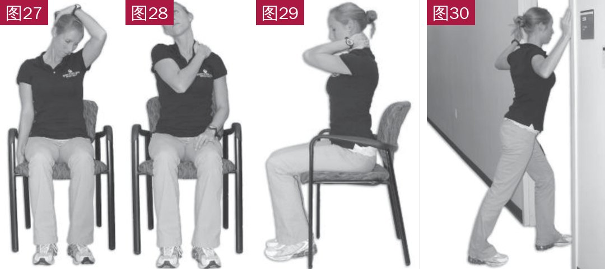
🔖附录图 27：上斜方肌拉伸；28：前/中斜角肌拉伸；29：枕下肌拉伸；30：胸大肌门框拉伸
| 动作 | 方法 |
|---|---|
| 颈伸展等长（图 31） | 弹力带绕过头后，双手握两端；屈肘 90°、收下颌，缓慢伸直双肘，保持颈部后缩不动 |
| 肩胛前伸（图 32） | 坐直、颈稍后缩；弹力带绕过肩背，双手持端、伸肘、肩胛后缩；在保持颈部后缩的同时缓慢前伸 |
| 颅颈屈曲（图 33） | 坐直，弹力带轻轻固定在前额；收下颌，颈椎前屈约 20° |
| 坐姿划船（图 34） | 弹力带固定在门把手上方；伸肘握住，缓慢拉向身体，同时夹紧肩胛骨下部 |
| 水平外展加外旋（图 35） | 颈稍后缩，双臂前平举、掌心向上；夹紧肩胛，水平外展成“T”字 |
| 肩胛平面上举（图 36） | 坐直，弹力带踩在脚下；夹紧肩胛骨下部，在肩胛平面缓慢上举到约肩高 |
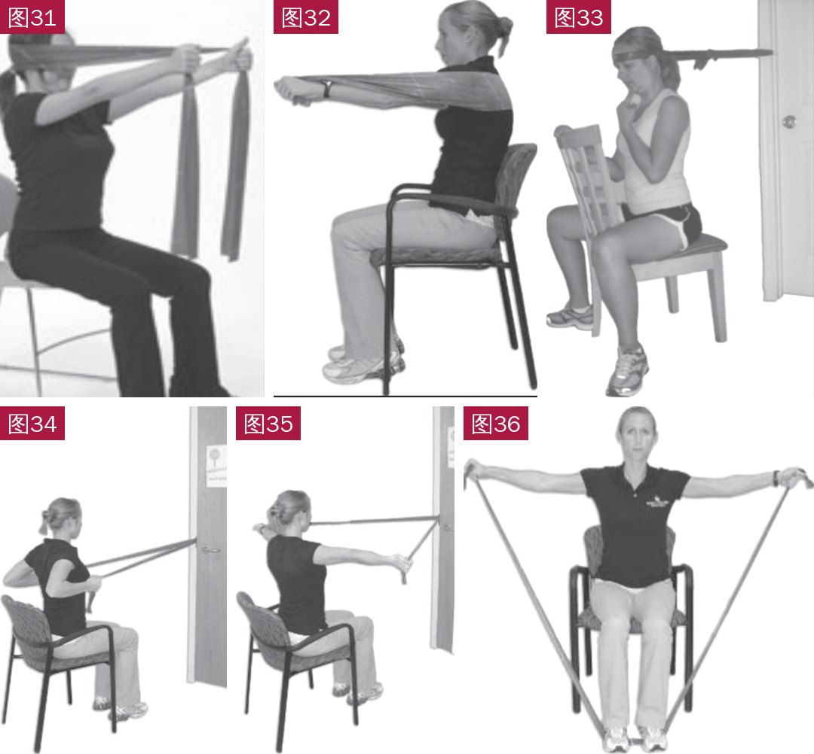
🔖附录图 31：颈伸展等长；32：肩胛前伸；33：颅颈屈曲；34：坐姿划船；35：水平外展加外旋；36：肩胛平面上举
• 只是“推导”阶段：单臂队列没有对照组，只能找出预后因素，不能证明这些指标能预测“运动”本身的疗效；作者也强调必须在双臂试验中验证后才能用于临床
• 长期无差异：6 个月时规则阳性与阴性患者结局相同，规则的实用价值有限
• 样本量小：91 人建立 5 个变量的规则，每个变量约 10 个成功事件，容易过拟合；5 项全满足仅 9 人
• 疗效本身一般：整体疼痛和 NDI 的改善未达到最小临床重要差异，依从性只有 35%
• 宽松的筛选标准：单因素 p < 0.10 即保留；肩前伸 p = 0.06、胸大肌紧张 p = 0.09，作者却称之为“显著”
• 数据前后不一：正文说 5 项全满足 +LR 为 14.27，表 3 为 14.94；≥4 项的置信区间正文为 1.52～5.78，表 3 为 1.52～5.70；成功率正文写 54.5%，但 50/91 应为 54.9%，验前概率又写作 56%
• 利益相关：弹力带由 Hygenic 公司（Thera-Band 生产商）赞助
• 优点：附录详细公开了检查和训练方法，临床可直接参考使用
① 规则：NDI < 18、肩前伸、不骑车、侧屈 < 32°、FABQ-PA < 15
② 用法：满足 ≥4 项，6 周成功概率从约 55% 提高到 78%
③ 局限：6 个月无差异，未经验证，只能作参考
④ 方案：4 个拉伸 + 6 个弹力带训练，每周 2 次门诊，6 周
⑤ 进阶：能连续完成 30 次（末端保持 3 秒）就升级弹力带
⑥ 启示：功能障碍轻、恐惧回避少的颈痛患者，可能更适合先做运动治疗
欢迎关注骨科康复小黄公众号，获取更多物理治疗的专业知识！
📄参考文献：
Hanney WJ, Kolber MJ, George SZ, Young I, Patel CK, Cleland JA. Development of a Preliminary Clinical Prediction Rule to Identify Patients with Neck Pain That May Benefit from a Standardized Program of Stretching and Muscle Performance Exercise: A Prospective Cohort Study. Int J Sports Phys Ther. 2013;8(6):756-776. PMCID: PMC3867069.
文中图片均来自原文，研究流程图已重绘为中文，附录图 10 英文标签已改为中文，表 1～3 及附录已译为中文，仅用于学术交流。